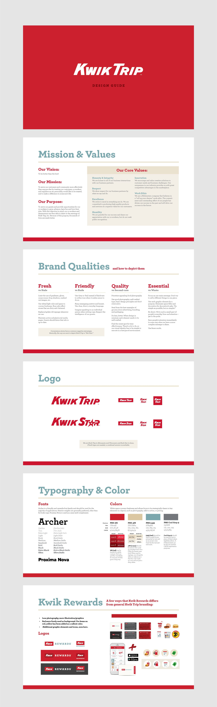
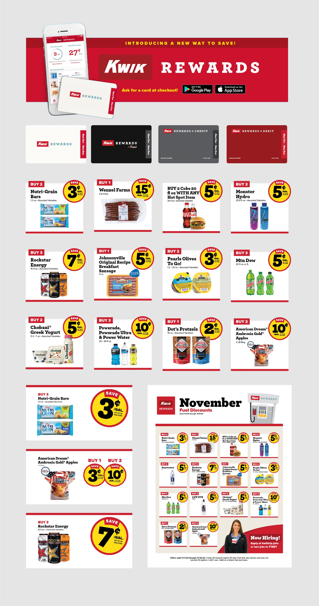
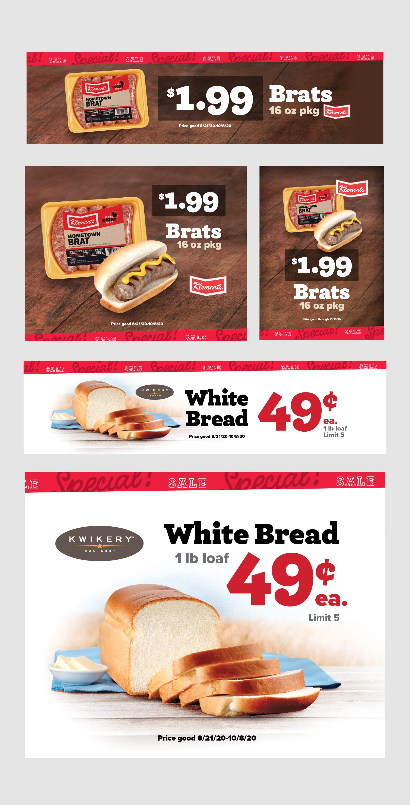
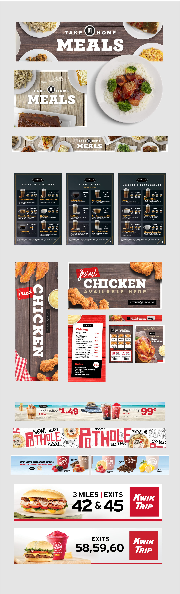
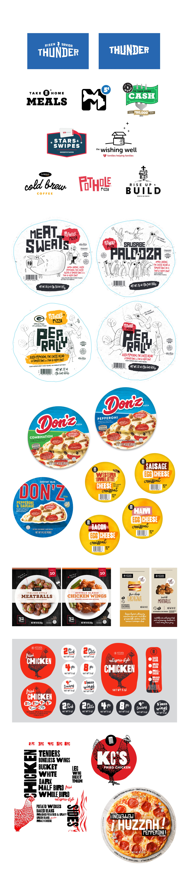

Kwik Trip Brand
When I arrived at Kwik Trip, they did not have any brand standards or guidelines. I worked to develop graphic standards to reflect Kwik Trip's position as a cleaner, friendlier place to get fuel and food. I wanted to provide a clean and solid base upon which to build, so my focus was on creating something familiar, clean, and easy to implement. I'm excited to see how the brand grows as more resources are allocated to design , and I'm proud to have kick-started that process.
Rewards Program
I created the brand and assets for the Kwik Trip rewards program. I provided direction for the design of the app dashboard and created artwork for physical cards, logo, illustrations, signage, and digital assets. A fun part of this project was figuring out how to create a semi-automated process of turning dozens of vendor-provided assets into a cohesive signage set in a variety of sizes and mediums.
Promotions
I did a lot of billboards and store signage for Kwik Trip. For outdoor signage in particular, the challenge here was to keep the price point as big as possible while still showing product quality using balance and space.
Product Rollouts
Three large product rollouts in my time at Kwik Trip were Take Home Meals, Karuba Gold Espresso Drinks, and Kitchen Cravings Fried Chicken. I did packaging design, branding, photography, and created ads and signage for all three.
Logos/Packaging
The Pothole Pizza illustrations below were drawn by illustrator Fred Blunt, and I love them. They were exactly what I was looking for to get a loose feel and differentiate a tavern-style specialty pizza from the standard 3/$10 that KT also has in stock.
Web Design
While I provided artwork and art direction for websites at Kwik Trip, since leaving there I have been able to do more work on entire sites, from CMS to UI/UX design. Some case studies are in the works, but for now, here are 2 recent sites I designed and developed. I'm looking forward to opportunities to work with skilled developers and focus more on user experience and interaction.
Motion Graphics
Here's a playlist of some motion graphics. Many were created for in-store digital display, and some for in-stadium display at Lambeau field and US Bank Stadium, which was pretty cool to see.